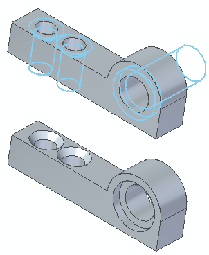

Recognizing holes
In part modeling, sometimes holes are modeled with circular cutouts and conical cutouts. This is a sufficient modeling technique for some situations. When working with imported files (part copy), holes are graphically represented by circular/conical faces.
If you must represent all holes as hole features for downstream applications and more accurately capture design intent, you might want to do one or more of the following:
-
Capture a hole type (simple, tapered, countersink, or counterbore).
-
Replace the detected hole candidates with a different hole type and size.
-
Redefine a hole as a threaded hole.
Use the Recognize Holes command to detect hole candidates and to replace the found circular/conical faces with hole features. The Recognize Holes dialog box controls how to process the detected hole candidates.
The Recognize Hole command is available in the part, sheet metal, and assembly environments. You can select a single design body to detect hole candidates. You can also select a single face to detect all hole candidates associated with the selected face.
Controlling detection
The initial selection step for hole recognition is to select a design body. If there are multi-bodies in the file, the command remains active to allow selection of another design body. After selecting a design body to detect hole candidates, the dialog box presents a Face Selection option which discards the detected holes in the design body. This option allows you to select a single face to process. This option only detects holes associated with the selected face.
Grouping
As hole candidates are detected, similar candidates are placed in groups. For example, the following might be grouped:
-
Equal diameter and finite depth candidates
-
Equal diameter through next candidates
-
Candidates that present themselves as counterbore facial topology structure with equal diameters and depths
-
Similar tapered and countersink face structures
You can control whether groups are processed by selecting the check box in the Groups column on the Hole Recognition dialog box. If cleared, the group is ignored for hole replacement during processing. A group of holes also has the number of occurrences displayed in the dialog box.
A hole type is assigned to each recognized hole group (Simple, Tapered, Countersink, or Counterbore).
Editing a detected group
Before processing the detected hole candidates, you can edit a hole group in the Hole Recognition dialog box. You can rename a hole group or use the system default name listed in the Feature Name column. You can also select an alternate hole type for a group using the Hole Options dialog box. When selecting an alternate hole type, a preview of the hole type appears on the holes.

How do I
Replace circular cutouts with hole featuresRecognize a hole pattern
Recognize a pattern
Learn more
Feature recognitionHole pattern recognition
Look up more details
Recognize Holes commandRecognize Holes dialog box
Recognize Hole Patterns command
Hole Pattern Recognition dialog box
Chamfer Recognition command
Recognize Patterns command